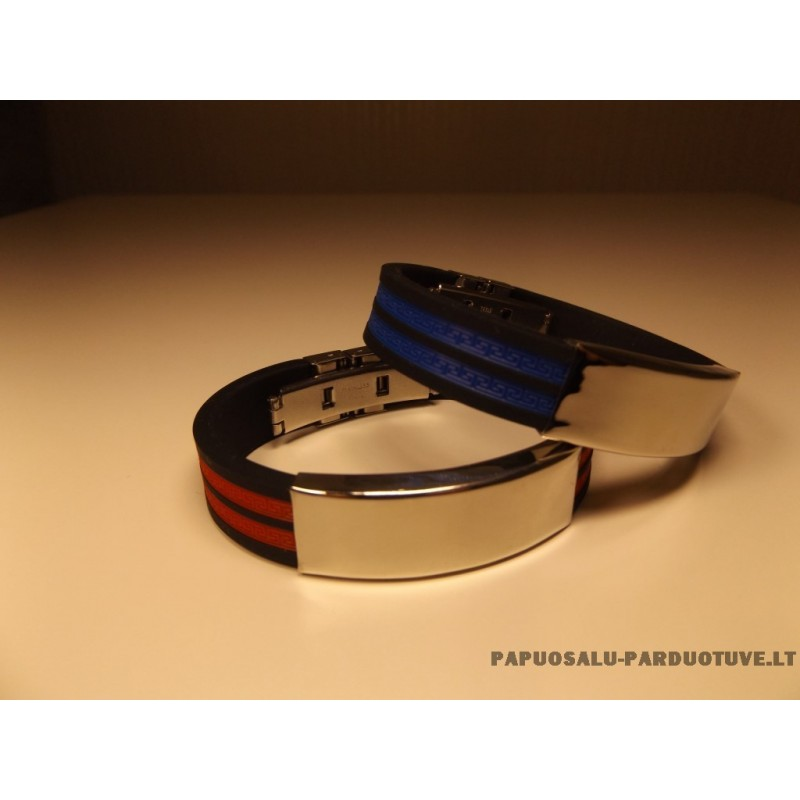

Rankų darbo apyrankės, kaina internetu - MinimalTouch
 Parduotuvė Papuošalai su akmenimis Papuošalai su Agatu Papuošalai su Akvamarinu Papuošalai su Amazonitu Papuošalai su Ametistu Papuošalai su auksu Papuošalai su Baroko perlu Papuošalai su Briliantais Papuošalai su Chrizokola Papuošalai su Dūminiu kvarcu Papuošalai su Gintaru Papuošalai su Granatu Papuošalai su Hematitu Papuošalai su Houlitu Papuošalai su Juoduoju perlu Papuošalai su Kalnų krištolu Papuošalai su Karneoliu Papuošalai su Koralu Papuošalai su Labradoritu Papuošalai su Lazuritu Papuošalai su Mėnulio akmeniu Papuošalai su Oniksu Papuošalai su Perlu Papuošalai su Rožiniu kvarcu Papuošalai su Turkiu Golden touch Apyrankės Apyrankės su Agatu Apyrankės su Akvamarinu Apyrankės su Ametistu Apyrankės su Dūminiu kvarcu Apyrankės su Gintaru Apyrankės su Granatu Apyrankės su Kalnų krištolu Apyrankės su Karneoliu Apyrankės su Kianitu Apyrankės su Labradoritu Apyrankės su Lazuritu Apyrankės su Mėnulio akmeniu Apyrankės su Oniksu Apyrankės su Turkiu Apyrankės su Perlais Apyrankės su Rožiniu kvarcu Apyrankės su Tigro akimi Auskarai Aukso auskarai Medžio auskarai Sidabro auskarai Kaklo papuošalai Kaklo papuošalai su Agatu Kaklo papuošalai su Akvamarinu Kaklo papuošalai su Amazonitu Kaklo papuošalai su Ametistu Kaklo papuošalai su Chrizokola Kaklo papuošalai su Dūminiu kvarcu Kaklo papuošalai su Gintaru Kaklo papuošalai su Granatu Kaklo papuošalai su Hematitu Kaklo papuošalai su Houlitu Kaklo papuošalai su Juoduoju perlu Kaklo papuošalai su Kalnų krištolu Kaklo papuošalai su Karneoliu Kaklo papuošalai su Kianitu Kaklo papuošalai su Koralu Kaklo papuošalai su Labradoritu Kaklo papuošalai su Lazuritu Kaklo papuošalai su Mėnulio akmeniu Kaklo papuošalai su Nefritu Kaklo papuošalai su Oniksu Kaklo papuošalai su Perlu Kaklo papuošalai su Rožiniu kvarcu Kaklo papuošalai su Turkiu Pakabukai su vardo raide Žiedai Žiedai su auksu Žiedai su briliantais Žiedai su granatu Žiedai su perlu Vestuviniai žiedai Rankų darbo papuošalai vestuvėms Rankų darbo papuošalai iš karoliukų Dovanų kuponai Apie Blog’as KontaktaiRankų darbo apyrankės
Subtilios ir mielos, minimalistinio elegantiško stiliaus rankų darbo apyrankės skirtos moterims, mėgstančioms šiuolaikinį minimalizmą.
Sidabrinė daili grandinėlė su prabangiai atrodančiu akcentu – rožiniu kvarcu, tigro akimi, perlu, mėnulio akmeniu, granatu, kalnų krištolu, oniksu, lazuritu ar kuriuo nors kitu – ant Jūsų riešo atrodys elegantiškai ir patraukliai. Apyrankės puikiai įsilies į bet kurį stilių, nuostabiai derėdamos ir prie mažos juodo suknelės, ir prie laisvai krentančių marškinėlių.
Itin moteriškus rankų darbo papuošalus gaminame su didele meile ir begaliniu kruopštumu, apgalvodami kiekvieną detalę. Siūlome didelę gerąją energetiką nešančių akmenų įvairovę, kurią specialiai atrinkome, tikėdami, kad mūsų parduotuvėje kiekviena Jūsų galite surasti būtent tai, ko ieškote. Rinkitės magišką akmenį pagal tai, apie ką šiuo metu svajojate ir leiskite Jūsų nepakartojamai asmenybei pražysti!
Jei norisi praskaidrinti mintis ir įsikvėpti naujos energijos – įsigykite apyrankę su kalnų krištolu. Ryžtui sustiprinti ir dar drąsiau pakovoti už savo svajones padės onikso akmuo, tapsiantis tikru Jūsų magišku talismanu. Rožinis kvarcas dovanos besąlyginę meilę sau ir kitiems, dūminis kvarcas mažins įtampą ir stresą, tigro akis suteiks drąsos ir grąžins pusiausvyrą, granatas – ramins ir apsaugos. Rankų darbo apyrankė, papuošta agato akmeniu, išlaisvins nuo emocinio kartėlio ir įtampos, o štai akvamarino akmuo nuteiks pozityviai užbaigti pradėtus darbus ir skatins ieškoti naujų tikslų.
Rikiuoti pagal Rikiuoti įprastai Rikiuoti pagal pavadinimą Rikiuoti pagal kainą Show 50 Products Show 50 Products Show 100 Products Show 150 ProductsRankų darbo apyrankė “Rožinis kvarcas”
20.00 € Pasirinkti savybes DetailsRankų darbo apyrankė “Dūminis kvarcas apvalus”
20.00 € Pasirinkti savybes DetailsRankų darbo apyrankė “Tigro akis”
20.00 € Pasirinkti savybes DetailsRankų darbo apyrankė “Dūminis kvarcas Cube”
20.00 € Pasirinkti savybes DetailsRankų darbo apyrankė “Perlas”
20.00 € Pasirinkti savybes DetailsRankų darbo apyrankė “Mėnulio akmuo kubelis”
25.00 € Pasirinkti savybes DetailsRankų darbo apyrankė “Granatas”
20.00 € Pasirinkti savybes DetailsRankų darbo apyrankė “Kalnų krištolas”
20.00 € Pasirinkti savybes DetailsRankų darbo apyrankė “Oniksas kubelis”
20.00 € Pasirinkti savybes DetailsRankų darbo apyrankė “Tigro akis kubelis”
20.00 € Pasirinkti savybes DetailsRankų darbo apyrankė “Oniksas Ø4 mm”
20.00 € Pasirinkti savybes DetailsRankų darbo apyrankė “Ametistas”
20.00 € Pasirinkti savybes DetailsRankų darbo apyrankė “Lazuritas Cube”
20.00 € Pasirinkti savybes DetailsRankų darbo apyrankė “Kianitas”
20.00 € Pasirinkti savybes DetailsRankų darbo apyrankė “Karneolis”
20.00 € Pasirinkti savybes DetailsRankų darbo apyrankė “Duo perlas ir oniksas”
20.00 € Pasirinkti savybes DetailsRankų darbo apyrankė “Agatas”
20.00 € Pasirinkti savybes DetailsRankų darbo apyrankė “Akvamarinas”
20.00 € Pasirinkti savybes DetailsRankų darbo apyrankė “Duo krištolas ir kvarcas”
20.00 € Pasirinkti savybes DetailsRankų darbo apyrankė “Mėnulio akmuo” Ø6 mm
20.00 € Pasirinkti savybes DetailsRankų darbo apyrankė “Duo karneolis ir mėnulio akmuo”
20.00 € Pasirinkti savybes DetailsRankų darbo apyrankė “Pilkasis perlas”
20.00 € Pasirinkti savybes DetailsRankų darbo apyrankė “Labradoritas”
20.00 € Pasirinkti savybes DetailsRankų darbo apyrankė “Lazuritas” apvalus
20.00 € Pasirinkti savybes DetailsRankų darbo apyrankė “Granatas” apvalus
20.00 € Pasirinkti savybes DetailsRankų darbo apyrankė “Gintaras”
20.00 € Pasirinkti savybes DetailsRankų darbo apyrankė “Houlitas”
20.00 € Pasirinkti savybes DetailsRankų darbo apyrankė “Juodasis perlas”
20.00 € Pasirinkti savybes DetailsMėnulio akmuo kubelis įkvėps drąsos naujai pradžiai, o jei pasirinksite apyrankę su ametistu – jausite ramybę ir užtikrintumą dėl priimamų sprendimų. Niekad neišeinantys iš mados perlai neš laimę ir taiką šeimoje, kianito akmuo atstatys būties tylą ir vidinę ramybę, o raudonasis karneolio akmuo ne tik pabrėš seksualumą, bet ir padės sutelkti dėmesį, sprendžiant sudėtingas užduotis. Siekiantiems karjeroms ar mokslų aukštumų pasisekimą atneš sidabrinė rankų darbo apyrankė su jėgos ir atkaklumo labradorito akmeniu. O jei už ištikimą bičiulystę norėtumėte padėkoti artimiausioms draugėms, nustebinkite jas stilingais rankų darbo papuošalais su pačiu tikriausiu draugystės akmeniu – mėlynuoju lazuritu.
Rankų darbo apyrankės, puoštos brangakmeniais ir mineralais, itin skoningai dera su kitais mūsų rankų darbo gaminiais – žaviais auskarais ar subtiliais žiedais, ir sukuria tobulą papuošalų rinkinį.
Branginkite savo laiką ir apsipirkite internetu – o mes pasirūpinsime, kad Jūsų siuntinys atkeliautų laiku, nesvarbu, ar būtumėte Vilniuje, Šiauliuose, Utenoje, Šakiuose ar Kaune.
Ypatingos energetikos papuošalai pavers Jūsų kasdienybę ypatingą. Pasirinkite tik Jums skirtą mineralą, nešantį slaptą žinutę, ir įsitikinkite jo daugialypiu poveikiu.
Sėkmė – garantuota!
Minimal Touch
Kontaktai Privatumo Politika Naudojimosi sąlygosKlientų aptarnavimas
Prekių pristatymas Naujienlaiškio prenumerata SusisiekiteKontaktai
+370 695 09094 ( Darbo dienomis 09:00 - 18:00 ) renata@minimaltouch.lt evelina@minimaltouch.lt MB “Minimal touch”, Įm. k. 305588578
Adresas: Lobio g. 2, Vilnius